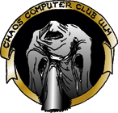

CCC Ulm
Seit Sommer 2018 dürfen wir den CCC Ulm als Teilgruppe des Hackerspace Ulm e.V. begrüßen. Durch die Eingliederung konnte der CCC Ulm seinen Status als Erfa-Kreis (zurück) erhalten und wird somit vom Bundes CCC e.V. gefördert.
Eine kleine Vorstellung des Ulmer CCC:
Wir sind eine galaktische Gemeinschaft von Lebewesen und unterstützen Vorhaben der Bildung und Volksbildung in Hinsicht neuer technischer Entwicklungen, sowie Kunst und Kultur. Der Chaos Computer Club Ulm versteht sich als ein Forum der Hackerszene, eine Instanz zwischen Hackern, Systembetreibern und der Öffentlichkeit.

Montagstreff
Jeden Montag Abend geschehen merkwürdige Dinge. Doch lest selbst.
- Datenreisende,
- Hacker,
- Chaoten,
- Schüler,
- Studenten,
- Handwerksmeister,
- Akademiker
- und viele andere
… treffen sich normalerweise jede Woche zum Chaos-Treff montags ab ca. 20:00 Uhr im Freiraum.
Wir quatschen, bestellen Pizza, lachen und beackern Rechner (nicht immer, aber immer öfter). Wer meint, dass er hinreichend Chaos-kompatibel ist, soll einfach mal vorbeischauen. Wir fressen niemanden und außer einer gesunden Portion Neugier erwarten wir keine Vorkenntnisse. Niemand soll aber erwarten, dass ihm ein komplettes Vollprogramm geboten wird. Jeder muss schon selbst seinen Mund aufmachen und seinen Teil zum Gelingen des Abends beitragen. Wir sind kein Kindergarten.
Projekte
Kontakt
- Mail: mail@ulm.ccc.de.
- Jabber: jabber.ulm.ccc.de
Öffentliche Mailingliste
Hier werdem Infos rund um den CCC Ulm verteilt. Dazu gehören neben allerlei Neuigkeiten aus dem Internet auch Seminartermine usw. Wer sich auf die Liste eintragen möchte, schickt eine Mail an:
mit einem subscribe im Body der Mail. Analog geht ein unsubscribe. Beiträge schickt man an: